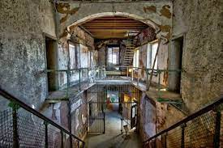
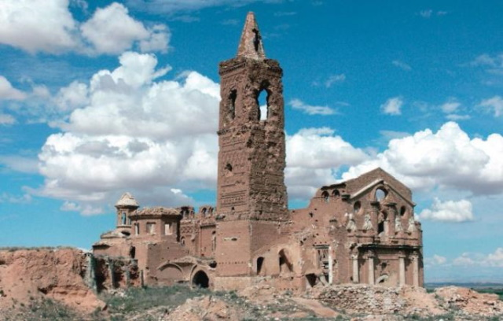

¿De dónde viene Halloween?
La celebración de Todos los Santos llegó a Estados Unidos durante el siglo XIX gracias a los emigrantes que llegaban desde Europa.
Halloween, una celebración de origen celta.
El día 31 de octubre, los pueblos celtas celebraban un antes y después en su calendario con una fiesta llamada Samhain, término que significa el final del verano.
Los celtas creían que la noche del 31 los difuntos reaparecían para caminar entre los vivos. por eso, se realizaban rituales para comunicarse con ellos.
Existe una teoría que apunta a que la tradición de disfrazarnos en Halloween puede aludir a esas prácticas en la que los celtas se ponían trajes y máscaras para ahuyentar a los malos espíritus.
En estas fechas es común el consumo de alimentos propios como:
- Buñuelos de viento.
- Huesos de santo.
- Chocolate con churros.
5 lugares más encantados del mundo para disfrutar de Halloween por todo lo alto:
- Penitenciaría Estatal del Este, Estados Unidos. 
- La Isla de las Muñecas, México.
- El palacio de Bhangarh, India.
- Banff Springs Hotel, Canadá.
- Pueblo de Ochate, España. 